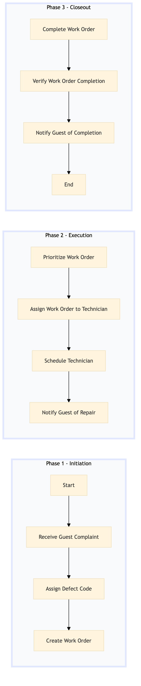

| Role | Steps |
|---|---|
| Front Desk Agent | 1.1 1.2 4.4 |
| Executive Housekeeper | 1.3 2.1 3.2 |
| Facilities Manager | 2.2 2.3 3.1 |
| Step | Name | Role | System | Input | Output | KPI | Dec? | Exc? | Pain Point / Risk |
|---|---|---|---|---|---|---|---|---|---|
| 1.1 | Receive Guest Complaint | Front Desk Agent | Oracle OPERA Cloud | Guest complaint via phone, in-person, or online form | Complaint logged in Oracle OPERA Cloud | Less than 3 minutes to log complaint | N | Y | Handling multiple complaints simultaneously |
| 1.2 | Assign Defect Code | Front Desk Agent | Oracle OPERA Cloud | Logged complaint in Oracle OPERA Cloud | Defect code assigned to the complaint | Less than 1 minute to assign defect code | N | Y | Incorrect defect code assignment |
| 1.3 | Create Work Order | Executive Housekeeper | Oracle OPERA Cloud | Defect code assigned in Oracle OPERA Cloud | Work order created in Oracle OPERA Cloud | Less than 5 minutes to create work order | N | Y | Delays in creating work orders |
| 2.1 | Prioritize Work Order | Facilities Manager | Oracle OPERA Cloud | Created work order in Oracle OPERA Cloud | Work order prioritized based on severity and impact | Less than 2 minutes to prioritize work order | Y | N | Overlooking critical defects |
| 2.2 | Assign Work Order to Technician | Facilities Manager | Oracle OPERA Cloud | Prioritized work order in Oracle OPERA Cloud | Work order assigned to a technician | Less than 3 minutes to assign work order | N | Y | Inefficient technician assignment |
| 2.3 | Schedule Technician | Facilities Manager | Oracle OPERA Cloud | Assigned work order in Oracle OPERA Cloud | Technician scheduled to perform the repair | Less than 5 minutes to schedule technician | N | Y | Overbooking technicians |
| 2.4 | Notify Guest of Repair | Front Desk Agent | Oracle OPERA Cloud | Scheduled work order in Oracle OPERA Cloud | Guest notified via phone or email about the repair schedule | Less than 2 minutes to notify guest | N | Y | Missed notifications |
| 3.1 | Complete Work Order | Technician | Oracle OPERA Cloud | Scheduled work order in Oracle OPERA Cloud | Work order completed and documented in Oracle OPERA Cloud | Less than 10 minutes to complete work order | N | Y | Incomplete or inaccurate repair documentation |
| 3.2 | Verify Work Order Completion | Executive Housekeeper | Oracle OPERA Cloud | Completed work order in Oracle OPERA Cloud | Work order verified and closed in Oracle OPERA Cloud | Less than 2 minutes to verify work order | N | Y | Reopening completed work orders |
| 3.3 | Notify Guest of Completion | Front Desk Agent | Oracle OPERA Cloud | Verified work order in Oracle OPERA Cloud | Guest notified via phone or email about the completion of repair | Less than 2 minutes to notify guest | N | Y | Missed notifications |
This process outlines how guest room defects are reported and work orders are created at a Marriott full-service hotel using Oracle OPERA Cloud PMS.